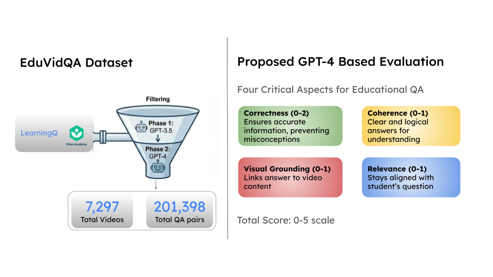
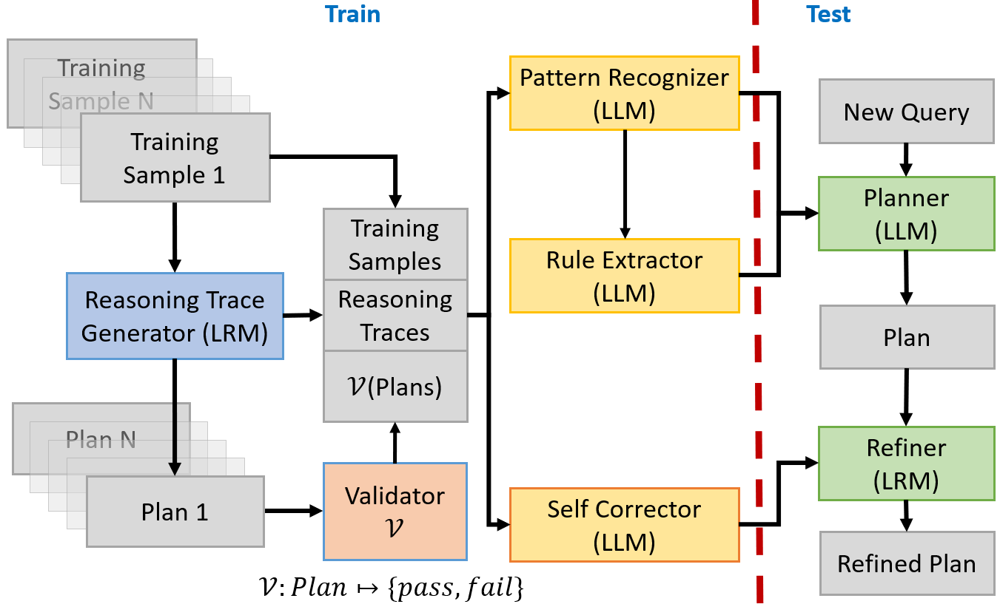
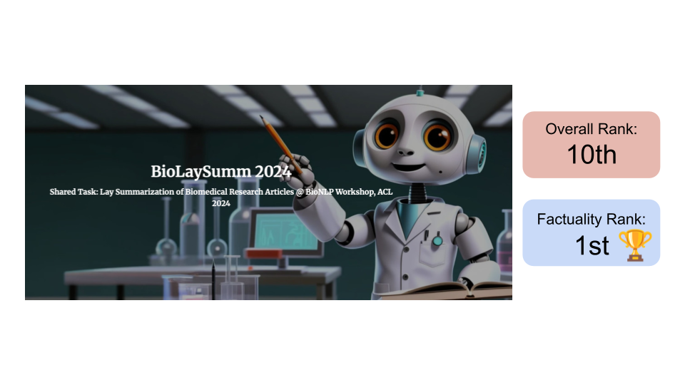

Google Scholar | Github | X | LinkedIn More about me: Blog Posts & Tutorials | Coursework | Professional Services |
I am a PhD Student in Yardi School of Artificial Intelligence at Indian Institute of Technology Delhi. I work at the intersection of Large Language Models and Planning under the guidance of Prof Mausam and Dr Manish Gupta (Microsoft).
My research focuses on developing architectures and benchmarks to enhance the capabilities of LLMs in planning-intensive tasks and complex decision-making scenarios.
I am always open to discussions. Please feel free to reach out! Other: Fun/Favorites |
| |
| [Dec' 25] | Presented "Towards Multimodal Question Answering in Educational Domain" at IJCNLP-AACL 2025, Mumbai(India). [paper] |
| [Nov' 25] | Presented "LRPLAN: A Multi-Agent Collaboration of Large Language and Reasoning Models for Planning with Implicit & Explicit Constraints" at EMNLP 2025, Suzhou(China). [paper] |
| [Oct' 25] | Completed Comprehensive Exam(PhD Qualifying Exam). [slides] |
| [June' 24] | Attended ACM Summer School on Generative AI for Text at IIT Gandhinagar [some snaps]. Our team 🏆 won the Hackathon for building Karpin Chat which does Long Table Question Answering. [code] |
| [June' 24] | Our team "Eulerian" 🏆 tops the factuality leaderboard in BioLaySumm 2024 (Shared Task: Lay Summarization of Biomedical Research Articles). Subsequently, we will present our strategy at the BioNLP Workshop @ ACL 2024. [paper] |
| [July' 23] | Attended Summer School on AI with focus on Computer Vision and Machine Learning at IIIT Hyderabad organized by CVIT. |
| |
|  |
|
|  |
|
|  |
|
|
|